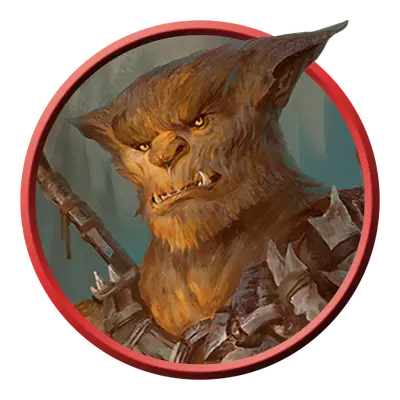

Медвежатник-охотник
Bugbear Stalker
Средняя Фея (Гоблиноид), Хаотичная Злая

Класс Защиты 15 Инициатива +2 (12)
Хиты 65 (10к8 + 20)
Скорость 30 футов
| мод | спас | ||
|---|---|---|---|
| СИЛ | 17 | +3 | +3 |
| ЛОВ | 14 | +2 | +2 |
| ТЕЛ | 14 | +2 | +4 |
| мод | спас | ||
|---|---|---|---|
| ИНТ | 11 | +0 | +0 |
| МДР | 12 | +1 | +3 |
| ХАР | 11 | +0 | +0 |
Чувства Тёмное зрение 60 футов, пассивное Восприятие 11
Языки Общий, Гоблинский
Опасность 3 (700 опыта; БВ +2)
Особенности
Похищение. Медвежатнику не нужно тратить дополнительные футы для перемещения Схваченного им существа.
Действия
Мультиатака. Медвежатник совершает две атаки Моргенштерном или Метательным копьём.
Моргенштерн. Бросок рукопашной атаки: +5 (с Преимуществом, если цель Схвачена этим медвежатником), досягаемость 10 фт. Попадание: 12 (2к8 + 3) Колющего урона.
Метательное копьё. Бросок рукопашной или дальнобойной атаки: +5, досягаемость 10 фт. или дистанция 30/120 фт. Попадание: 13 (3к6 + 3) Колющего урона.
Бонусные действия
Быстрый захват. Спасбросок Ловкости: Сл 13, одно видимое медвежатником существо размером не больше Среднего в 10 футах. Провал: Цель Схвачена (Сл высвобождения из захвата 13).
Бонус мастерства +2
Среда обитания Леса, Луга, Подземье, Страна фей
Сокровища Личные, Оружейные
Медвежатники
Медвежатники — воплощение страха перед дикими землями и опасностью, затаившейся в тени чащоб. Они славятся своей незаметностью, и враги, осмелившиеся ступить на их землю, часто исчезают без следа.
Медвежатники охотники часто берут своих жертв в заложники, а затем используют их для захвата или запугивания других существ.